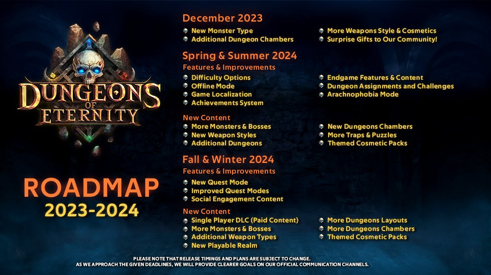
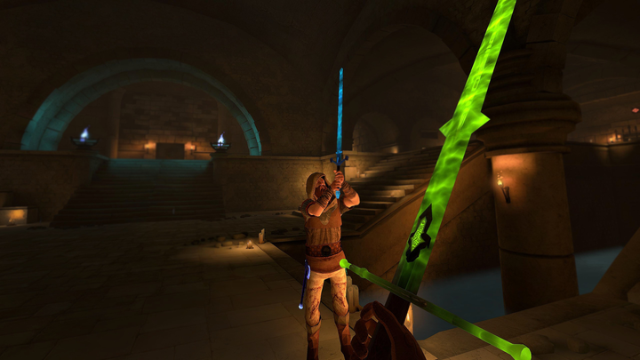

From the developers, more information on the spring update noted in the
original roadmap:

The post,
www.oculus.com/experiences/quest/developer-post/758544736255872
entitled "Development update 2024.1" described a few updates both expected
and unknown. The highlights:
- The max player level has been raised to 60
-
Tier 7 difficult referenced as "Nightmare" will add to challange
including disabling last stand in solo runs
- Support for bHaptics "haptics suit": chest, arm and head
-
localization (language support) for seven languages other than English
- 25 new chambers with some room-sized traps
-
chambers now have more randomized drop locations, don't expect to find
keys in the exact same place every run
-
The devs posted an image of two-handle weapons that will take up the
back slot
- a brand new enemy (which as of yet has been undescribed).

Alas, no definitive date has been set for the release, but we're keeping
our eyes and ears open for any announcements.